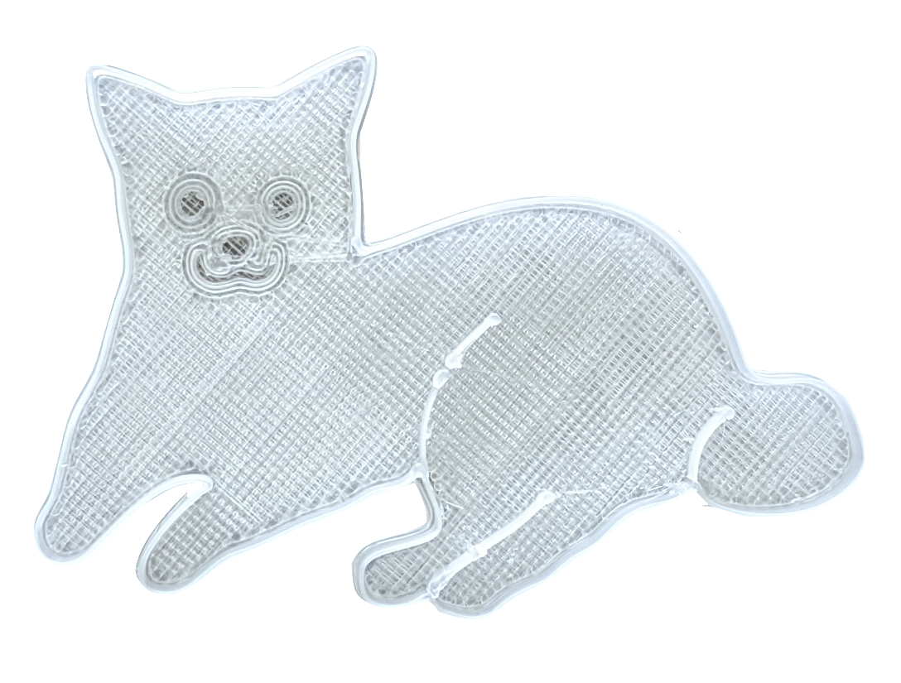

cookie cutter
3 x 1.75 inch 3D printed pomeranian cookie cutter

3 x 1.75 inch 3D printed pomeranian cookie cutter
This link contains STL and Rhino models of three different cookie cutters including the one that I am presenting here.
Tools: Photoshop, Illustrator, Rhino, Slic3r, Ender 3 Pro


arf-arf!